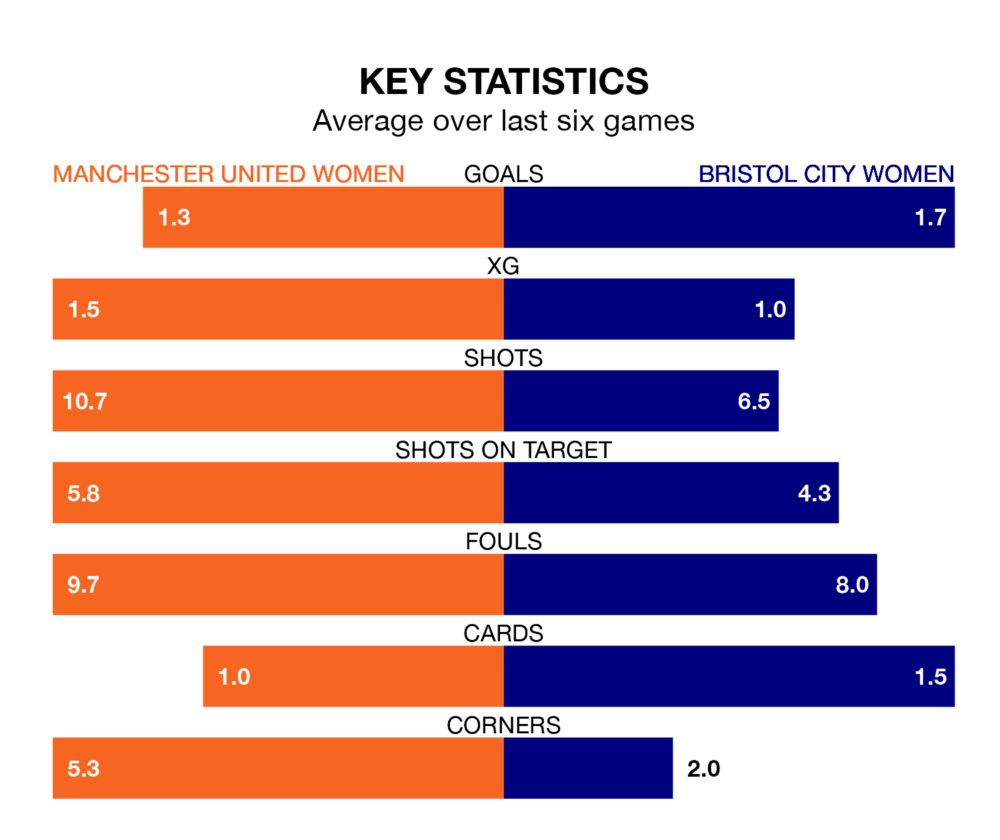

Relegation candidates Bristol City Women face a challenge away against high-flying Manchester United Women at the Leigh Sports Village Stadium on Sunday.
Bristol City Women are rooted to the bottom of the FA Women's Super League table, and have picked up just one win and three draws in their 15 games to date.
The Red Devils, meanwhile, are fourth in the standings with 25 points, having won seven and drawn four, and are 12 points behind table-toppers Chelsea Women.
Manchester United are in mixed form in the FA Women's Super League, with two wins and a draw from their last six games.
With no wins and a draw over that period, Bristol City's form is much worse – they have taken one point from 18, compared to the Red Devils' seven.
With 32 goals in 15 games so far this season, the home side are scoring more than average in the league with 2.1 goals per game. And they are conceding fewer than average, letting in 19 goals at a rate of 1.3 per game.
The Robins, meanwhile, are below average scorers, with 1.3 goals per game, compared to a league average of 1.7. They have conceded 3.0 goals per game.
In the last five years, Manchester United and Bristol City have played each other on four occasions. Manchester United won three of them and Bristol City one.
On average, the Red Devils scored 2.2 goals and the Robins 0.5 in those matches.
Their last meeting was on November 26, when Manchester United won 2-0 away.
Manchester United's last match was on March 3, a 1-1 draw against West Ham United Women, with Rachel Williams getting the goal for the Red Devils.
Bristol City lost 7-3 against Brighton and Hove Albion Women last time out, also on March 3, with Amalie Grønbak Thestrup, Brooke Aspin and Megan Connolly on the scoresheet.
Updated: 15:10 (UTC), 15/03/24